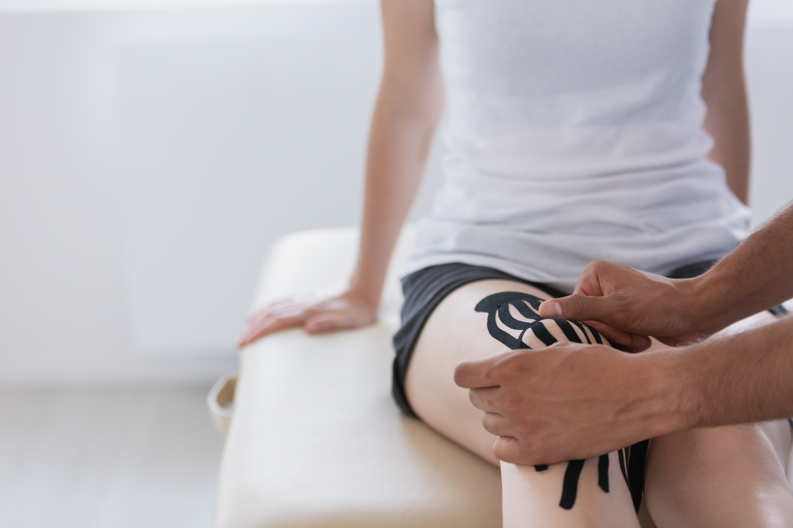

Kineziotaping
Taping je metoda zpevňování kloubů pomocí elastických lepících pásků.
Tato metoda se používá na zpevnění kloubů buď jako prevence proti úrazům a zdravých kloubech nebo na zpevnění kloubů v poúrazových kloubech.
Lepidlo tejpu obsahuje lékařskou pryskyřici, která je hypoalergenní.
Tejp zvrásní a nadzvedne kůži, tím pomáhá uvolnit receptory bolesti, cévy a průtok lymfy. Zlepšuje také zásobení minerály a celkově pomáhá k rychlejšímu zotavení.

| Služba | Délka | Cena |
|---|---|---|
| 1 cm tejpu | — | 2,- Kč |
| Aplikace | — | 200,- Kč |
| Malý tejp (rameno, svalový tejp bedra, krční páteř…) | — | 300,- Kč |
| Velký tejp (koleno, korekční tejp záda, svalový tejp stehno) | — | 500,- Kč |